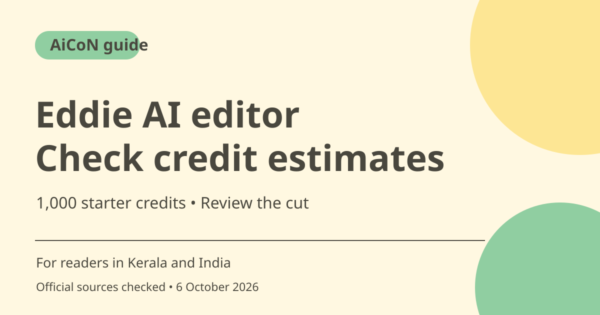

Eddie AI video editor: free credits and export caveats
Eddie AI edits footage through natural-language requests and can send timelines to established video editors. New accounts start with 1,000 free credits. Imports, edits and other operations consume credits, so check the displayed estimate before running a large project.

What is Eddie AI?
Eddie is an assistant video editor for organising footage, making rough cuts and polishing edits. Its official pages describe chat-directed editing, transcripts, captions, music, titles and exports to editors such as Premiere Pro, Final Cut Pro and DaVinci Resolve. These are product descriptions, not a personal test of edit quality or a guarantee that every export retains every effect.
Who is it useful for in Kerala and India?
A video creator or small production team may want a first assembly of an interview or a set of social clips. Keep the original media and make the story goal clear. Test a short project before relying on it for client work. Do not assume that a multilingual marketing claim establishes reliable Malayalam transcription or caption quality on your actual footage.
Free credits do not make a large job free
Pricing confirms 1,000 starter credits. Imports, edit requests and generated extras consume the balance; the pricing estimator also includes export usage. The provider describes roughly 250 credits per source hour for importing, billed in 15-minute blocks. These are estimates, not fixed costs for every project. Watch the in-app estimate and balance.
Regular and Pro credits are different
The official credit guide distinguishes Regular from Pro credits and says Pro packs cost more. Pricing also says a subscription is not required, but an optional yearly plan is available in the app for regular editors. The earlier short post's no-subscription wording should mean no required subscription, not that a yearly option never exists. Confirm the credit type before buying.
Web uploads and desktop imports have different exports
The export guide says desktop imports can reference original local media paths, while web or cloud imports reference transcoded proxies. A timeline file is not a package containing all the footage. Missing proxies, frame-rate differences and relinking to mismatched originals can cause offline media or errors. Test the intended export route before a deadline.
Review the cut and the bill
Chat instructions can remove a useful sentence or alter the meaning of an interview. Watch the full result, compare important quotes with the original and check captions. For music, voiceovers and client footage, confirm rights and permission. Keep track of credit estimates for repeated edits, because many small iterations can accumulate.
How to use it, step by step
- Open heyeddie.ai and review pricing, credit types and available app routes. Begin with the starter credits if offered to your new account.
- Import a short sample of media you have permission to use. For direct imports from Premiere, Final Cut or Resolve, follow the official desktop integration guide.
- Read the import estimate before running it. Keep the original files in a stable location.
- Ask for a specific rough cut with a clear length, audience and story goal. Review the displayed cost of larger operations.
- Watch the result and request small corrections. Check names, captions, quotes and the effect of removed material.
- Choose the required render or timeline export. For an editing-app handoff, check whether it refers to originals or proxies and keep the referenced media available.
- Open the result in the destination editor and inspect the whole timeline before delivering. Check the remaining credits before more generation or polishing.
Cost, eligibility and limits
| Starter | 1,000 free credits for new accounts, according to pricing. They are not unlimited edits. |
|---|---|
| Regular pack | 1,000 credits for US$10 one time, roughly ~₹964 at an rough ~₹96.43/USD estimate. Confirm the final amount and whether you are selecting Regular or Pro credits. |
| Expiry and plans | Pricing says credit packs and starter credits do not expire; optional yearly-plan credits have separate expiry wording. No subscription is required, but a yearly option exists. |
| Project estimate | Roughly 250 credits per source hour to import, with edit and other costs added. Check actual estimates; do not promise one hour always fits 1,000 credits. |
Frequently asked questions
Do I need a subscription?
Pricing says no; credit packs are available. It also describes an optional yearly plan.
Does the export include all original footage?
A timeline can reference files rather than contain them. Web/cloud routes reference proxies, so keep the required media accessible.
Is a 1,000-credit pack always one hour of editing?
No. The provider gives a rough example; costs depend on import length, edits, generated extras and export.
Official sources
- PTI 6 October exchange-rate report used for rough INR estimates
- Official access
- Pricing
- Regular and Pro credits
- Import integrations
- Export media caveats
Checked 6 October 2026. Features and prices can change. This is a guide, not a personal product test.